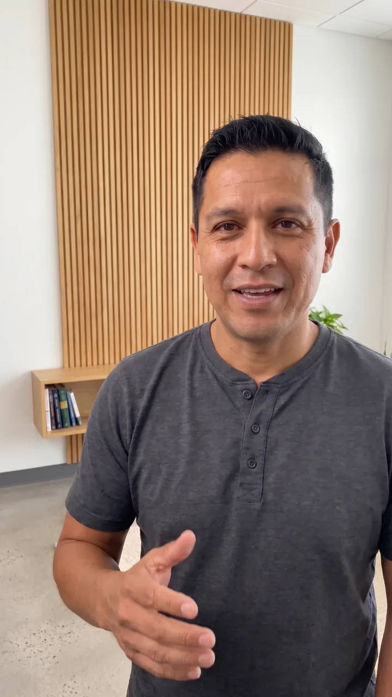
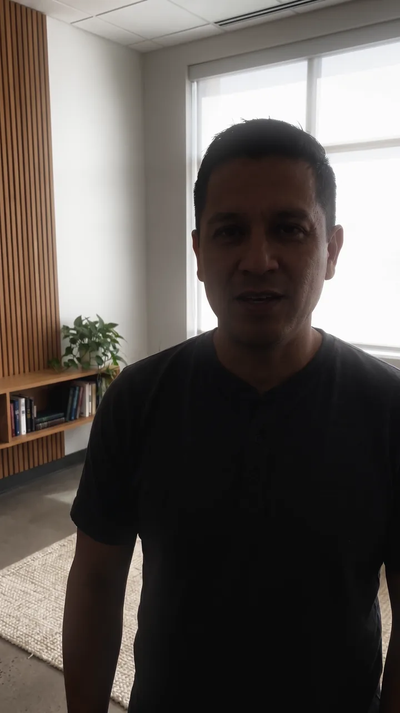
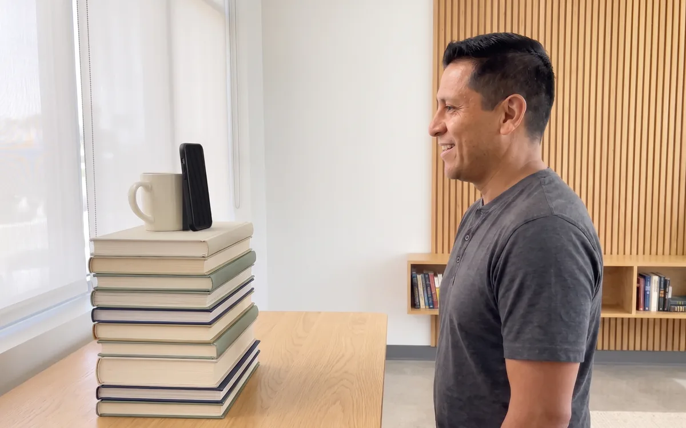
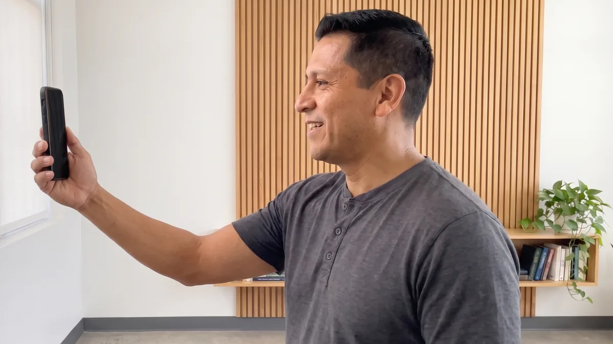

The short version
- Write a script of about 75 words, and name one service time.
- Face a window, with the phone upright at eye level.
- Record in a small, quiet room, an arm's length from the phone.
- Read from a free teleprompter app, so your eyes stay near the lens.
- Record once and leave the mistakes in. Then trim the video and add captions.
Grab these six things
- Your phoneCharged, with 5 GB free
- A windowDaylight beats any lamp
- A tripod or a stack of booksOr hold the phone yourself
- A 30-second scriptCopy the one in step 1
- A quiet roomWith a door you can shut
- A soft clothFor the lens
1Write a 30-second script
Thirty seconds holds about 75 words. That leaves room for four things: your name, an invitation, a service time and one ask.
- Name one service time, or two at most, and say it out loud.
- Read the script out loud once. Change any word that feels stiff, since your own phrasing sounds better.
- Leave out your church's history and its list of ministries. A family wants a time and a welcome.
- Talk about your church, and leave the viewer's beliefs out of it. Meta's ad rules bar lines like "Are you Christian?"
2Find your light
Light does more for your video than the camera does. A window gives you the best light in the building, and it's free.


- Face the window. Stand two or three steps back from it, with the phone between you and the glass.
- Film in the daytime. A cloudy day works well, since clouds soften the light.
- Switch off the ceiling lights once the window lights your face. Ceiling lights put shadows under your eyes.
- Check behind you. A tidy wall or a bookshelf a few feet back looks great.
Keep the window in front of you. With the window behind you, the phone exposes for the glass and your face goes dark. Direct sun on your face is too harsh, so pull a sheer curtain across or pick a window on the shady side.
3Set your phone
Set it upright at eye level, an arm's length away. A tripod gives the steadiest picture, and two other setups work too.


- Turn the phone upright. Families watch on their phones, and an upright video fills the whole screen.
- Raise the lens to your eyes. A phone set too low points up your nose and films the ceiling.
- Stand an arm's length away, about three feet. The phone's microphone hears you best from there.
- Frame yourself from the chest up, with a little room above your head.
Two minutes in your settings
On an iPhone, open Settings, tap Camera, then Record Video, and pick 4K at 30 fps. Turn HDR Video off on the same screen. On Android, pick the highest video quality in your camera's settings.
Then switch on Do Not Disturb and wipe the lens with a soft cloth.
4Pick a quiet room
Families forgive a plain background. They scroll past a video they can't hear.
- Choose a small room with soft things in it. A rug and a full bookshelf soak up echo.
- Shut the door, and turn off the music and any fan you can hear.
- Stand still and listen for ten seconds. Your phone records every sound you can hear.
- Skip the empty sanctuary. Big rooms with hard floors echo.
Own a clip-on microphone? Use it. Without one, your phone's own microphone does the job from an arm's length away.
5Read from a teleprompter app
A teleprompter app scrolls your script beside the camera lens while you record. You read, and your eyes stay on the families you're inviting.
Free pick
Edits, from Instagram
- Free on iPhone and Android
- Records clips up to 10 minutes long
- Adds captions for you
- Saves in 4K with no watermark
Paid pick
PromptSmart Pro
- $29.99 once on the App Store
- Scrolls as you speak, and waits when you pause
- Selfie Mode records while you read
- Voice tracking follows English
In either app, put the text at the top of the screen, right under the lens. Make it big enough to read from an arm's length away. Features and prices come from each app's store listing in November 2026, so check the listing before you buy.
Filming without an app? Read one sentence off a page, then look up at the lens and say it. Trim the pauses later.
6Record one take
Press record once and read the script all the way through. Leave the mistakes in. You'll cut them in the next step.
- Smile for two seconds before your first word. That quiet stretch gives you a clean place to cut.
- Tripped on a line? Stop and say that sentence again from its first word. Keep recording.
- Hold your smile for two seconds after your last word, then stop.
- Talk to one family. Picture the couple you greeted at the door last Sunday.
- Got five more minutes? Read it a second time in the same recording. The second pass comes out warmer.
7Trim it and add captions
Open the recording in Edits, or in the editor your phone came with.
- Cut the dead air at the start and the end, plus any line you flubbed.
- Turn on captions, then fix any word the app misheard, starting with your church's name.
- Put the service time on screen as text, near the middle of the frame. The apps' buttons cover the top fifth and the bottom third.
- Save at the highest quality the app offers.
Skip the filters and the spinning transitions. A plain cut keeps eyes on your pastor. Before you post, play the video once with the sound off and check that the invitation still makes sense.
8Put it to work
- Post it as a Reel on Instagram and Facebook, and pin it to the top of both.
- Add it to your plan-your-visit page, so families know a face before they walk in.
- Show it to families near your church. Our Facebook and Instagram guide covers the radius and the budget.
- Ask each member to share it with one friend.
Four more shots for a look inside
Your pastor's invitation gets stronger with a look inside the building. Film five seconds of each, upright:
- Your front doors, so families recognize the building when they pull in
- Greeters at the door
- Kids check-in
- The room during worship, or a clip from your livestream
Lay these shots over your pastor's voice in the edit, or post them on their own.
Is a phone enough camera?
Yes, for an invitation. The job is a face and a voice from an arm's length away, and every recent phone handles that.
Spend on sound before you spend on a camera. A clip-on microphone is the one upgrade worth buying, and the window covers your light for free. Bring a bigger camera on a filming day, with member stories and a full Sunday to capture.
Eight checks before you press record
- Window in front of me
- Phone upright
- Lens at eye level
- An arm's length away
- Lens wiped
- Do Not Disturb on
- Door shut, music off
- Script loaded, text by the lens
Questions pastors ask
Do I need to memorize the script?
No. A teleprompter app scrolls the words beside the lens while you read. Without an app, read one sentence off the page, then look up and say it.
Front camera or back camera?
Use the front camera with a teleprompter, since you need to see the screen. Filming with a helper and no teleprompter? Turn the phone around. The back camera is a little sharper.
Can I hold the phone myself?
Yes. Hold it at arm's length with the lens level with your eyes, and stand still while you read. A tripod or a stack of books gives a steadier picture, so use one if it's handy.
Can I film on an Android phone?
Yes. The setup and the one-take plan stay the same. Set your camera to its highest video quality. Edits is in the Play Store too.
Should I turn the phone sideways?
Keep it upright. Families see your invitation on Facebook and Instagram, and an upright video fills their whole screen.
Does the pastor have to be the one on camera?
Your pastor makes the strongest invitation, since a family meets that same face on Sunday. A warm staff member or a longtime member works too.
I get stiff on camera. Any advice?
Stand up and talk to one family. Smile before your first word. Then read the script a second time. Most people loosen up on the second pass.
Can Big Splash edit our invitation videos?
Yes. On our plans, you send one recording, and we edit each invitation and add the captions. Nothing goes out until you approve it. We can also film at your church on a filming day.
Sources
- Apple, "Change video recording settings on iPhone", iPhone User Guide.
- Apple App Store, Edits and PromptSmart Pro listings, read in November 2026.
- Meta Transparency Center, "Privacy Violations and Personal Attributes", advertising standards.